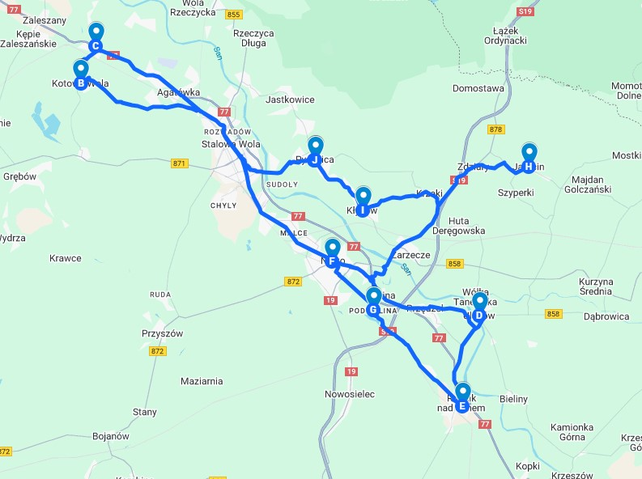

1-dniowa wycieczka rowerowa
Trasa: Pysznica – ok. 70 km
🗺 Program i trasa przejazdu
Start:
Pysznica – 08:00
Kotowa Wola
Zbydniów
Ulanów
Rudnik nad Sanem
Nisko
Podwolina
Jarocin
Kłyżów
Powrót:
Pysznica – ok. 17:00
🖼 Mapa trasy

Statyczna mapa trasy rowerowej – pętla ok. 70 km
🎯 Atrakcje po drodze
Kotowa Wola:
wiejskie pejzaże
Ulanów:
flisacki klimat nad Sanem
Rudnik:
Muzeum Wikliny i park
Nisko:
tereny rekreacyjne i zalew
Kłyżów:
sosnowe lasy i cisza